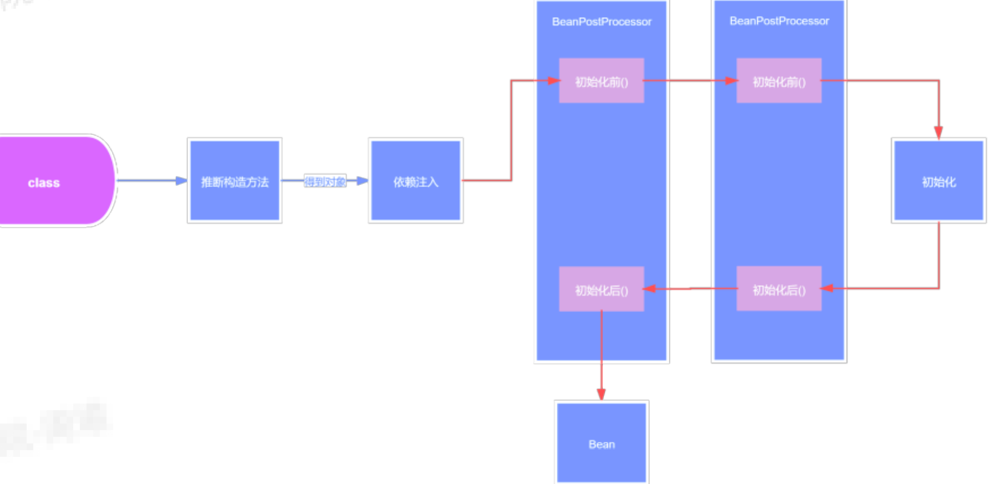

Spring makes programming Java quicker, easier, and safer for everybody. Spring’s focus on speed, simplicity, and productivity has made it the world’s most popular Java framework.（Spring使Java编程对每个人来说更快、更容易、更安全。Spring对速度、简单性和生产率的关注使它成为世界上最流行的Java框架。）
“We use a lot of the tools that come with the Spring framework and reap the benefits of having a lot of the out of the box solutions, and not having to worry about writing a ton of additional code—so that really saves us some time and energy.”
“我们使用了Spring框架附带的许多工具，并获得了许多开箱即用的解决方案的好处，而不必担心编写大量额外的代码——因此，这确实节省了我们一些时间和精力。”
SEAN GRAHAM, APPLICATION TRANSFORMATION LEAD, DICK’S SPORTING GOODS
Spring is everywhere(无处不在)
Spring is flexible(灵活的)
Spring is productive(多产的)
Spring is fast(快)
Spring is secure(安全)
Spring is supportive(支持的)
以上都是来自于Spring官网的一些内容，下面正式开始了解面试中常见的spring的相关问题。
面试题
- Spring是什么？读过源码介绍一下大致流程？
- 谈谈你对IOC的理解？
- 谈谈你对AOP的理解？
- 如何实现一个IOC容器？
- BeanFactory和ApplicationContext有什么区别？
- Spring中后置处理器的作用？
- 描述一下Spring Bean的生命周期？
- Spring中的单例bean是线程安全的吗？
- 解释一下Spring支持的几种bean的作用域？
- Spring框架中都用到了那些设计模式？
- Spring事务的实现方式和原理以及隔离级别？
- Spring事务传播机制？
- Spring事务什么时候会失效？什么时候@Transactional会失效？
- 什么是bean的自动装配，有哪些方式？
Spring是什么
轻量级的开源的J2EE框架。它是一个容器框架，用来装java bean（java对象），中间层框架（万能胶）可以起一个连接作用，比如说把Struts和hibernate粘合在一起运用，可以让我们的企业开发更快、更简洁。
Spring是一个轻量级的控制反转（IoC）和面向切面（AOP）的容器框架
- 从大小与开销两方面而言Spring都是轻量级的。
- 通过控制反转（IoC）的技术达到松耦合的目的。
- 提供了面向切面编程的丰富支持，允许通过分离应用的业务逻辑与系统级服务进行内聚性的开发。
- 包含并管理应用对象(Bean)的配置和生命周期，这个意义上是一个容器。
- 将简单的组件配置、组合成为复杂的应用，这个意义上是一个框架。
Spring、SpringMVC、SpringBoot区别和联系
- Spring是⼀个快速开发框架，Spring帮助程序员来管理对象
- Spring的源码实现的是⾮常优秀的，设计模式的应⽤、并发安全的实现、⾯向接⼝的设计等
- 在创建Spring容器，也就是启动Spring时：
- ⾸先会进⾏扫描，扫描得到所有的BeanDefinition对象，并存在⼀个Map中
- 然后筛选出⾮懒加载的单例BeanDefinition进⾏创建Bean，对于多例Bean不需要在启动过程中去进⾏创建，对于多例Bean会在每次获取Bean时利⽤BeanDefinition去创建
- 利⽤BeanDefinition创建Bean就是Bean的创建⽣命周期，这期间包括了合并BeanDefinition、推断构造⽅法、实例化、属性填充、初始化前、初始化、初始化后等步骤，其中AOP就是发⽣在初始化后这⼀步骤中
- 单例Bean创建完了之后，Spring会发布⼀个容器启动事件
- Spring启动结束
- 在源码中会更复杂，⽐如源码中会提供⼀些模板⽅法，让⼦类来实现，⽐如源码中还涉及到⼀些BeanFactoryPostProcessor和BeanPostProcessor的注册，Spring的扫描就是通过BenaFactoryPostProcessor来实现的，依赖注⼊就是通过BeanPostProcessor来实现的
- 在Spring启动过程中还会去处理@Import等注解
对IOC的理解
ioc容器（容器概念）
实际上就是个map（key，value），里面存的是各种对象（在xml里配置的bean节点、@repository、@service、@controller、@component），在项目启动的时候会读取配置文件里面的bean节点，根据全限定类名使用反射创建对象放到map里、扫描到打上上述注解的类还是通过反射创建对象放到map里。
这个时候map里就有各种对象了，接下来我们在代码里需要用到里面的对象时，再通过DI注入（autowired、resource等注解，xml里bean节点内的ref属性，项目启动的时候会读取xml节点ref属性，根据id注入，也会扫描这些注解，根据类型或id注入；id就是对象名）。
控制反转
没有引入IOC容器之前，对象A依赖于对象B，那么对象A在初始化或者运行到某一点的时候，自己必须主动去创建对象B或者使用已经创建的对象B。无论是创建还是使用对象B，控制权都在自己手上。引入IOC容器之后，对象A与对象B之间失去了直接联系，当对象A运行到需要对象B的时候，IOC容器会主动创建一个对象B注入到对象A需要的地方。通过前后的对比，不难看出来：对象A获得依赖对象B的过程,由主动行为变为了被动行为，控制权颠倒过来了，这就是“控制反转”这个名称的由来。
全部对象的控制权全部上缴给“第三方”IOC容器，所以，IOC容器成了整个系统的关键核心，它起到了一种类似“粘合剂”的作用，把系统中的所有对象粘合在一起发挥作用，如果没有这个“粘合剂”，对象与对象之间会彼此失去联系，这就是有人把IOC容器比喻成“粘合剂”的由来。
依赖注入
“获得依赖对象的过程被反转了”。控制被反转之后，获得依赖对象的过程由自身管理变为了由IOC容器主动注入。依赖注入是实现IOC的方法，就是由IOC容器在运行期间，动态地将某种依赖关系注入到对象之中。
对AOP的理解
系统是由许多不同的组件所组成的，每一个组件各负责一块特定功能。除了实现自身核心功能之外，这些组件还经常承担着额外的职责。例如日志、事务管理和安全这样的核心服务经常融入到自身具有核心业务逻辑的组件中去。这些系统服务经常被称为横切关注点，因为它们会跨越系统的多个组件。
当我们需要为分散的对象引入公共行为的时候，OOP则显得无能为力。也就是说，OOP允许你定义从上到下的关系，但并不适合定义从左到右的关系。例如日志功能。
日志代码往往水平地散布在所有对象层次中，而与它所散布到的对象的核心功能毫无关系。在OOP设计中，它导致了大量代码的重复，而不利于各个模块的重用。
AOP：将程序中的交叉业务逻辑（比如安全，日志，事务等），封装成一个切面，然后注入到目标对象（具体业务逻辑）中去。AOP可以对某个对象或某些对象的功能进行增强，比如对象中的方法进行增强，可以在执行某个方法之前额外的做一些事情，在某个方法执行之后额外的做一些事情
实现IOC容器
- 配置文件配置包扫描路径
- 递归包扫描获取.class文件
- 反射、确定需要交给IOC管理的类
- 对需要注入的类进行依赖注入
- 配置文件中指定需要扫描的包路径【
确定包路径】 - 定义一些注解，分别表示访问控制层、业务服务层、数据持久层、依赖注入注解、获取配置文件注解【
定义私有注解】 - 从配置文件中获取需要扫描的包路径，获取到当前路径下的文件信息及文件夹信息，我们将当前路径下所有以.class结尾的文件添加到一个Set集合中进行存储【
读取class文件并保存至Set集合】 - 遍历这个set集合，获取在类上有指定注解的类，并将其交给IOC容器，定义一个安全的Map用来存储这些对象【
遍历集合，根据注解交给IOC，保存至缓存Map】 - 遍历这个IOC容器，获取到每一个类的实例，判断里面是否有依赖其他的类的实例，然后进行递归注入【
遍历IOC容器，判断注入】
- 配置文件中指定需要扫描的包路径【
BeanFactory和ApplicationContext有什么区别
ApplicationContext是BeanFactory的子接口
ApplicationContext提供了更完整的功能：
- 继承MessageSource，因此支持国际化。
- 统一的资源文件访问方式。
- 提供在监听器中注册bean的事件。
- 同时加载多个配置文件。
- 载入多个（有继承关系）上下文，使得每一个上下文都专注于一个特定的层次，比如应用的web层。
- BeanFactroy采用的是延迟加载形式来注入Bean的，即只有在使用到某个Bean时(调用getBean())，才对该Bean进行加载实例化。这样，我们就不能发现一些存在的Spring的配置问题。如果Bean的某一个属性没有注入，BeanFacotry加载后，直至第一次使用调用getBean方法才会抛出异常。
- ApplicationContext，它是在容器启动时，一次性创建了所有的Bean。这样，在容器启动时，我们就可以发现Spring中存在的配置错误，这样有利于检查所依赖属性是否注入。ApplicationContext启动后预载入所有的单实例Bean，通过预载入单实例bean,确保当你需要的时候，你就不用等待，因为它们已经创建好了。
- 相对于基本的BeanFactory，ApplicationContext唯一的不足是占用内存空间。当应用程序配置Bean较多时，程序启动较慢。
- BeanFactory通常以编程的方式被创建，ApplicationContext还能以声明的方式创建，如使用ContextLoader。
- BeanFactory和ApplicationContext都支持BeanPostProcessor、BeanFactoryPostProcessor的使用，但两者之间的区别是：BeanFactory需要手动注册，而ApplicationContext则是自动注册。
Spring后置处理器作用
Spring中的后置处理器分为BeanFactory后置处理器和Bean后置处理器，它们是Spring底层源码架构设计中⾮常重要的⼀种机制，同时开发者也可以利⽤这两种后置处理器来进⾏扩展。
BeanFactory后置处理器
表示针对BeanFactory的处理器，Spring启动过程中，会先创建出BeanFactory实例，然后利⽤BeanFactory处理器来加⼯BeanFactory，⽐如Spring的扫描就是基于BeanFactory后置处理器来实现的。
Bean后置处理器
也类似，Spring在创建⼀个Bean的过程中，⾸先会实例化得到⼀个对象，然后再利⽤Bean后置处理器来对该实例对象进⾏加⼯，⽐如我们常说的依赖注⼊就是基于⼀个Bean后置处理器来实现的，通过该Bean后置处理器来给实例对象中加了@Autowired注解的属性⾃动赋值，还⽐如我们常说的AOP，也是利⽤⼀个Bean后置处理器来实现的，基于原实例对象，判断是否需要进⾏AOP，如果需要，那么就基于原实例对象进⾏动态代理，⽣成⼀个代理对象。

Spring Bean的生命周期
{kind=link}
- 解析类得到BeanDefinition
- 如果有多个构造方法，则要推断构造方法
- 确定好构造方法后，进行实例化得到一个对象
- 对对象中的加了@Autowired注解的属性进行属性填充
- 回调Aware方法，比如BeanNameAware，BeanFactoryAware
- 调用BeanPostProcessor的初始化前的方法
- 调用初始化方法
- 调用BeanPostProcessor的初始化后的方法，在这里会进行AOP
- 如果当前创建的bean是单例的则会把bean放入单例池
- 使用bean
- Spring容器关闭时调用DisposableBean中destory()方法
Spring中的单例bean是线程安全的吗
Spring中的Bean默认是单例模式的，框架并没有对bean进行多线程的封装处理。
如果Bean是有状态的那就需要开发人员自己来进行线程安全的保证，最简单的办法就是改变bean的作用域把”singleton”改为’‘protopyte’这样每次请求Bean就相当于是new Bean()这样就可以保证线程的安全了。
- 有状态就是有数据存储功能
- 无状态就是不会保存数据controller、service和dao层本身并不是线程安全的，只是如果只是调用里面的方法，而且多线程调用一个实例的方法，会在内存中复制变量，这是自己的线程的工作内存，是安全的。
Dao会操作数据库Connection，Connection是带有状态的，比如说数据库事务，Spring的事务管理器使用Threadlocal为不同线程维护了一套独立的connection副本，保证线程之间不会互相影响（Spring是如何保证事务获取同一个Connection的）
不要在bean中声明任何有状态的实例变量或类变量，如果必须如此，那么就使用ThreadLocal把变量变为线程私有的，如果bean的实例变量或类变量需要在多个线程之间共享，那么就只能使用synchronized、lock、CAS等这些实现线程同步的方法了。
Spring中bean的作用域
- singleton：默认，每个容器中只有一个bean的实例，单例的模式由BeanFactory自身来维护。该对象的生命周期是与Spring IOC容器一致的（但在第一次被注入时才会创建）。
- prototype：为每一个bean请求提供一个实例。在每次注入时都会创建一个新的对象request：bean被定义为在每个HTTP请求中创建一个单例对象，也就是说在单个请求中都会复用这一个单例对象。
- session：与request范围类似，确保每个session中有一个bean的实例，在session过期后，bean会随之失效。
- application：bean被定义为在ServletContext的生命周期中复用一个单例对象。
- websocket：bean被定义为在websocket的生命周期中复用一个单例对象。
- global-session：全局作用域，
- global-session和Portlet应用相关。当你的应用部署在Portlet容器中工作时，它包含很多portlet。如果你想要声明让所有的portlet共用全局的存储变量的话，那么这全局变量需要存储在global-session中。全局作用域与Servlet中的session作用域效果相同。
Spring框架中的设计模式
简单工厂：由一个工厂类根据传入的参数，动态决定应该创建哪一个产品类。
Spring中的BeanFactory就是简单工厂模式的体现，根据传入一个唯一的标识来获得Bean对象，但是否是在传入参数后创建还是传入参数前创建这个要根据具体情况来定。
工厂方法：
实现了FactoryBean接口的bean是一类叫做factory的bean。其特点是，spring会在使用getBean()调用获得该bean时，会自动调用该bean的getObject()方法，所以返回的不是factory这个bean，而是这个bean.getOjbect()方法的返回值。
单例模式：
spring对单例的实现： spring中的单例模式完成了后半句话，即提供了全局的访问点BeanFactory。但没有从构造器级别去控制单例，这是因为spring管理的是任意的java对象。
适配器模式：
Spring定义了一个适配接口，使得每一种Controller有一种对应的适配器实现类，让适配器代替controller执行相应的方法。这样在扩展Controller时，只需要增加一个适配器类就完成了SpringMVC的扩展了。
装饰器模式：动态地给一个对象添加一些额外的职责。就增加功能来说，Decorator模式相比生成子类更为灵活。
Spring中用到的包装器模式在类名上有两种表现：一种是类名中含有Wrapper，另一种是类名中含有Decorator。
动态代理：
切面在应用运行的时刻被织入。一般情况下，在织入切面时，AOP容器会为目标对象创建动态的创建一个代理对象。SpringAOP就是以这种方式织入切面的。
织入：把切面应用到目标对象并创建新的代理对象的过程。
观察者模式：
spring的事件驱动模型使用的是 观察者模式 ，Spring中Observer模式常用的地方是listener的实现。
策略模式：
Spring框架的资源访问Resource接口。该接口提供了更强的资源访问能力，Spring 框架本身大量使用了
Resource 接口来访问底层资源。
模板方法：父类定义了骨架（调用哪些方法及顺序），某些特定方法由子类实现。
最大的好处：代码复用，减少重复代码。除了子类要实现的特定方法，其他方法及方法调用顺序都在父类中预先写好了。
refresh方法
Spring事务的实现方式和原理以及隔离级别
在使用Spring框架时，可以有两种使用事务的方式，一种是编程式的，一种是申明式的，@Transactional注解就是申明式的。
首先，事务这个概念是数据库层面的，Spring只是基于数据库中的事务进行了扩展，以及提供了一些能让程序员更加方便操作事务的方式。
比如我们可以通过在某个方法上增加@Transactional注解，就可以开启事务，这个方法中所有的sql都会在一个事务中执行，统一成功或失败。
在一个方法上加了@Transactional注解后，Spring会基于这个类生成一个代理对象，会将这个代理对象作为bean，当在使用这个代理对象的方法时，如果这个方法上存在@Transactional注解，那么代理逻辑会先把事务的自动提交设置为false，然后再去执行原本的业务逻辑方法，如果执行业务逻辑方法没有出现异常，那么代理逻辑中就会将事务进行提交，如果执行业务逻辑方法出现了异常，那么则会将事务进行回滚。
当然，针对哪些异常回滚事务是可以配置的，可以利用@Transactional注解中的rollbackFor属性进行配置，默认情况下会对RuntimeException和Error进行回滚。
spring事务隔离级别就是数据库的隔离级别：外加一个默认级别
- read uncommitted（未提交读）
- read committed（提交读、不可重复读）
- repeatable read（可重复读）
- serializable（可串行化）
数据库的配置隔离级别是Read Commited,而Spring配置的隔离级别是Repeatable Read，请问这时隔离级别是以哪一个为准？
以Spring配置的为准，如果spring设置的隔离级别数据库不支持，效果取决于数据库
Spring事务传播机制
多个事务方法相互调用时,事务如何在这些方法间传播
方法A是一个事务的方法，方法A执行过程中调用了方法B，那么方法B有无事务以及方法B对事务的要求不同都
会对方法A的事务具体执行造成影响，同时方法A的事务对方法B的事务执行也有影响，这种影响具体是什么就
由两个方法所定义的事务传播类型所决定。
- REQUIRED(Spring默认的事务传播类型)：如果当前没有事务，则自己新建一个事务，如果当前存在事务，则加入这个事务
- SUPPORTS：当前存在事务，则加入当前事务，如果当前没有事务，就以非事务方法执行
- MANDATORY：当前存在事务，则加入当前事务，如果当前事务不存在，则抛出异常。
- REQUIRES_NEW：创建一个新事务，如果存在当前事务，则挂起该事务。
- NOT_SUPPORTED：以非事务方式执行,如果当前存在事务，则挂起当前事务
- NEVER：不使用事务，如果当前事务存在，则抛出异常
- NESTED：如果当前事务存在，则在嵌套事务中执行，否则REQUIRED的操作一样（开启一个事务）
和REQUIRES_NEW的区别
REQUIRES_NEW是新建一个事务并且新开启的这个事务与原有事务无关，而NESTED则是当前存在事务时（我
们把当前事务称之为父事务）会开启一个嵌套事务（称之为一个子事务）。在NESTED情况下父事务回滚时，
子事务也会回滚，而在REQUIRES_NEW情况下，原有事务回滚，不会影响新开启的事务。
和REQUIRED的区别
REQUIRED情况下，调用方存在事务时，则被调用方和调用方使用同一事务，那么被调用方出现异常时，由于
共用一个事务，所以无论调用方是否catch其异常，事务都会回滚而在NESTED情况下，被调用方发生异常
时，调用方可以catch其异常，这样只有子事务回滚，父事务不受影响
Spring事务什么时候会失效？什么时候@Transactional会失效？
spring事务的原理是AOP，进行了切面增强，那么失效的根本原因是这个AOP不起作用了！常见情况有如下几种
发生自调用，类里面使用this调用本类的方法（this通常省略），此时这个this对象不是代理类，而是UserService对象本身！解决方法很简单，让那个this变成UserService的代理类即可！
方法不是public的
@Transactional只能用于public的方法上，否则事务不会失效，如果要用在非public方法上，可
以开启AspectJ代理模式。数据库不支持事务
没有被spring管理
异常被吃掉，事务不会回滚(或者抛出的异常没有被定义，默认为RuntimeException)
因为Spring事务是基于代理来实现的，所以某个加了@Transactional的⽅法只有是被代理对象调⽤时，那么这个注解才会⽣效，所以如果是被代理对象来调⽤这个⽅法，那么@Transactional是不会⽣效的。
同时如果某个⽅法是private的，那么@Transactional也会失效，因为底层cglib是基于⽗⼦类来实现的，⼦类是不能重载⽗类的private⽅法的，所以⽆法很好的利⽤代理，也会导致@Transactianal失效
bean的自动装配，有哪些方式
开启自动装配，只需要在xml配置文件中定义“autowire”属性。
1 | <bean id="cutomer" class="com.xxx.xxx.Customer" autowire="" /> |
autowire属性有五种装配的方式：
- no – 缺省情况下，自动配置是通过“ref”属性手动设定 。
autowire属性有五种装配的方式：
no – 缺省情况下，自动配置是通过“ref”属性手动设定。
- byName-根据bean的属性名称进行自动装配。
1 | Cutomer的属性名称是person，Spring会将bean id为person的bean通过setter方法进行自动装 |
- byType-根据bean的类型进行自动装配。
1 | Cutomer的属性person的类型为Person，Spirng会将Person类型通过setter方法进行自动装配。 |
- constructor-类似byType，不过是应用于构造器的参数。如果一个bean与构造器参数的类型形同，则进行自动装配，否则导致异常。
1 | Cutomer构造函数的参数person的类型为Person，Spirng会将Person类型通过构造方法进行自动装 |
- Cutomer构造函数的参数person的类型为Person，Spirng会将Person类型通过构造方法进行自动装配。
1 | Cutomer构造函数的参数person的类型为Person，Spirng会将Person类型通过构造方法进行自动装 |
- @Autowired自动装配bean，可以在字段、setter方法、构造函数上使用。
Spring扩展点
- BeanFactoryPostProcessor
- BeanDefinitionRegistryPostProcessor
- BeanPostProcessor
- InstantiationAwareBeanPostProcessor
- AbstractAutoProxyCreator
- @Import
- ImportBeanDefinitionRegistrar
- ImportSelector
- Aware
- InitializingBean
- FactoryBean
- SmartInitializingSingleton
- ApplicationListener
- Lifecycle
- SmartLifecycle
- LifecycleProcessor
- HandlerInterceptor
- MethodInterceptor
应用场景
整合Nacos
1 | # 对ApplicationListener的扩展 |
NacosWatch：
1 | #对SmartLifecycle的扩展 |
Eureka Server端上下文的初始化是在SmartLifecycle#start中实现的
EurekaServerInitializerConfiguration
整合Feign
FeignClientsRegistrar
FeignClientFactorybean

整合Ribbon
LoadBalancerAutoConfiguration
对SmartInitializingSingleton的扩展，为所有用@LaodBalanced修饰的restTemplate（利用了@Qualifier）绑定实现了负载均衡逻辑的拦截器LoadBalancerInterceptor
LoadBalancerInterceptor
整合sentinel
AbstractSentinelInterceptor
1 | # Webmvc接口资源保护入口 |
SentinelDataSourceHandler
1 | #Sentinel持久化读数据源设计，利用了SmartInitializingSingleton扩展点 |
NacosDataSourceFactoryBean
整合seata
GlobalTransactionScanner
{kind=link}
GlobalTransactionalInterceptor
{kind=link}
Nacos配置中心源码分析

...
...
Copyright 2021 sunfy.top ALL Rights Reserved